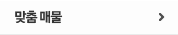

본문 바로가기

맞춤매물
의뢰하신 조건에 따라 중개업소에서 추천한 맞춤매물을 확인하실 수 있습니다.
맞춤매물 서비스는 진행중 의뢰 (의뢰상태: 의뢰확인중, 추천중) 건을 기준으로
3건
까지 이용하실 수 있습니다.
진행 중 의뢰 건은 의뢰기간이 종료되면
자동으로 종료된의뢰 탭
으로 이동합니다.
진행중 의뢰
리스트에서
의뢰취소
버튼을 클릭하시면 의뢰 기간이 만료되기 전 의뢰를 종료하실 수 있습니다.
종료된 의뢰
는 자동으로 종료된 의뢰 탭으로 이동합니다.
진행중 의뢰
종료된 의뢰
매물리스트
의뢰번호
의뢰내용
의뢰기간
잔여일
추천매물건수
(미확인/전체)
의뢰상태
의뢰관리
진행중인 맞춤매물 의뢰가 없습니다.
맞춤매물 의뢰신청하기